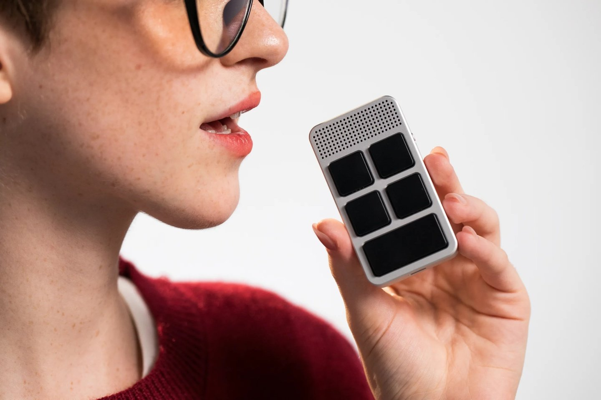

新闻 · 2026-11-24 18:00
Genspark 推出 SecondBrain VoicePad AI 语音键盘：双麦克风、支持会议转录
Genspark 于 11 月 24 日推出 SecondBrain VoicePad AI 语音键盘，支持双麦克风会议转录、50 多种语言实时翻译、AI 工具访问，兼容 Windows/macOS，众筹价 119 美元起，内置存储可离线保存录音，单次充电续航 20 小时。

来源与核验
单一信源报道，未交叉核实
Genspark 于 11 月 24 日推出 SecondBrain VoicePad AI 语音键盘，支持双麦克风会议转录、50 多种语言实时翻译、AI 工具访问，兼容 Windows/macOS，众筹价 119 美元起，内置存储可离线保存录音，单次充电续航 20 小时。

单一信源报道，未交叉核实